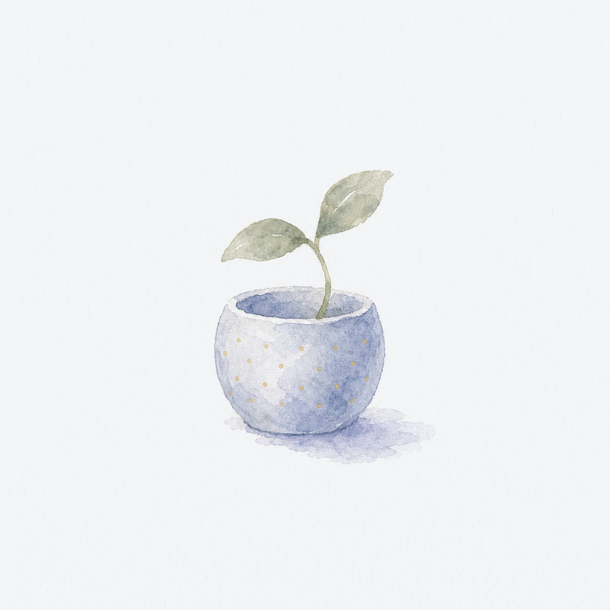
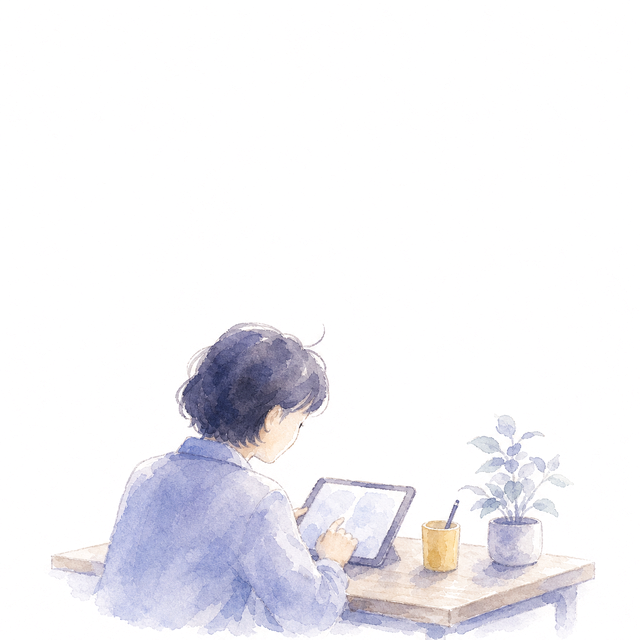
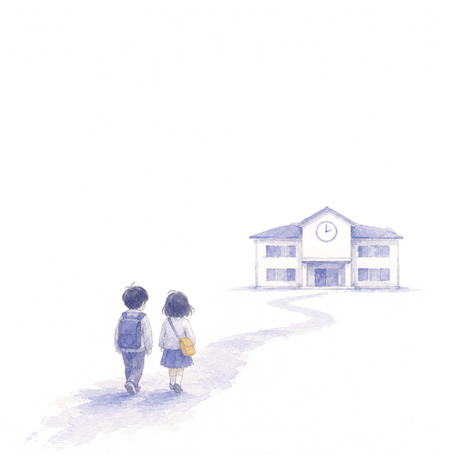
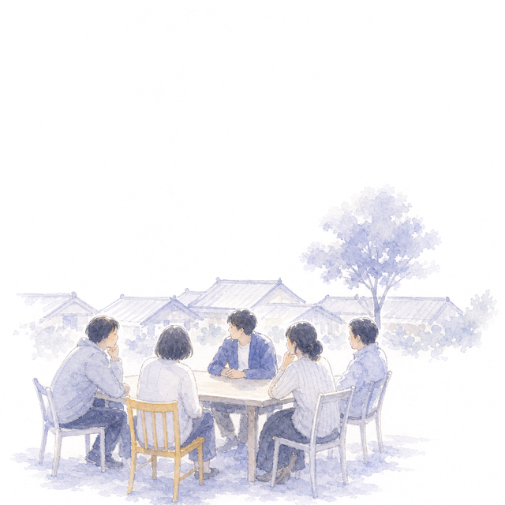
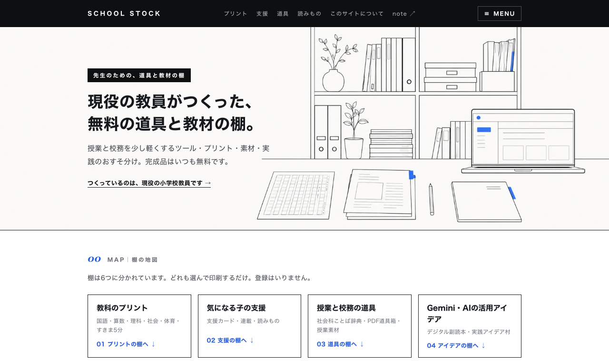
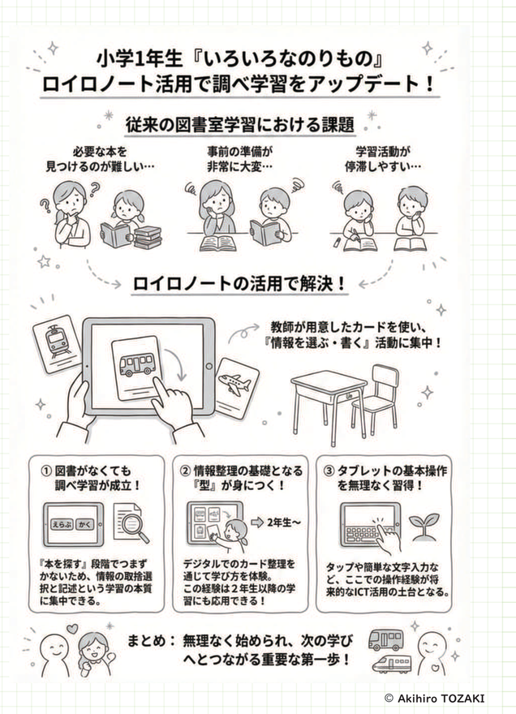
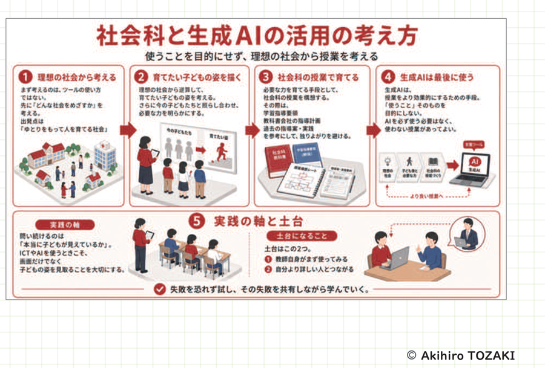
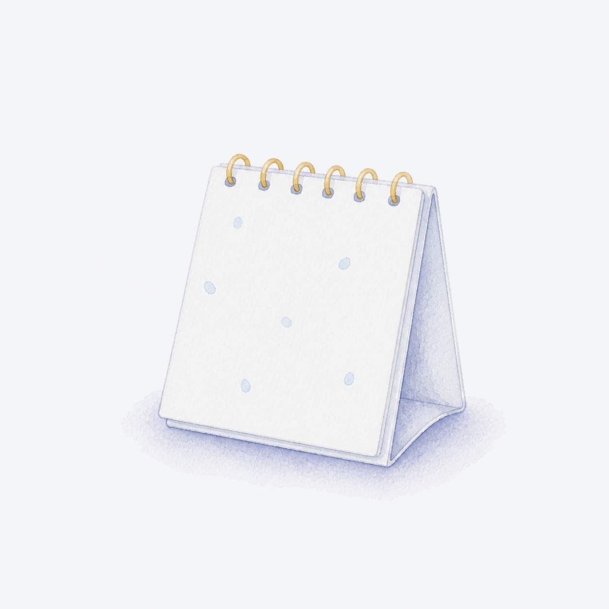
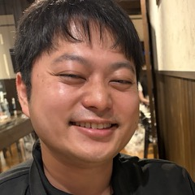
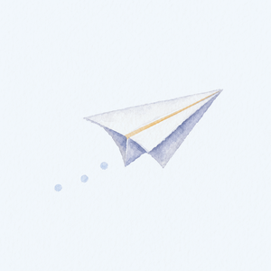

なぜこの事業をやるのか。

ゆとりをもって、
人を育てる社会をつくる。
「人」は子どもだけではありません。先生も、親も、地域の人も、人を育てる側にいます。「ゆとり」は3つ。気持ちのゆとり、お金のゆとり、時間のゆとりです。
現場の実践を、学校で続く形に。
端末や高いツールが入っても、それだけでは変わらないのを何度も見てきました。教室の中が分かる人間が外から学校に入り続け、先生が「明日の授業が、また楽しみになる」ところまで整えます。
- ゆとりを増やす仕事だけ受ける。最初の問いは「この仕事は、誰かのゆとりを増やすか」。
- 完成品は無料のまま。「あなたの学校に合わせる」ところからが仕事。
- 測って、正直に報告する。数字を大きく見せない。合わなければ、やめる判断も一緒に。
この仕事を選んだ理由があります。担任していた学級に、学校の力だけでは守りきれなかった子がいました。学校としてやれることはやりました。それでも、教員のままでは届かない領域があると知り、教室の中が分かる人間が外から学校に入り続ける形を、民間からつくっていこうと決めました。
LiFE with。共に生きる、という意味です。
教室から、学校へ、地域へ。
現役の教室で試すことから始めて、学校の中で続く形に、地域に広がる形に。
LiFE withの仕事は、この道の上にあります。

教室で試す
生成AI、Google Workspace、社会科PBLなどを、日常の授業と校務の中で実践・検証。うまくいったことだけでなく、使われなかった理由や改善の過程も記録します。

学校で広げる
研修で紹介して終わるのではなく、「翌日試す一つ」を決め、その後の振り返りまで含めて設計。担当者一人に頼らず、学校の中で続く形を考えます。

地域でつなぐ
GEG Chikuhoをはじめ、教員・大学・企業・地域が安心して学び合える場づくり。学校の内と外をつなぎ、新しい授業や挑戦が生まれる関係を育てます。
主軸は、授業改善のための業務改善。
校務の時間を減らすこと自体が目的ではありません。空いた時間が授業の準備に戻って、はじめて意味があると思っています。
授業改善のための業務改善
- 困りごとから始める校内研修。「定着しない」「担当が一人で抱えている」から出発します。
- 「翌日試す一つ」を決める。紹介して終わりの研修にはしません。
- 回るまで伴走。担当の先生がいない日でも、日常の仕事が回るところまで。
現役教員のため、所属先の規程と手続きを確認のうえ対応しています。2026年度の研修・登壇はすべて無償です。
企業と学校の協働授業
企業の伝えたいことを、授業で使える教材に作りかえる。飯塚市の副読本づくりが実例です。
コミュニティ運営
GEG Chikuho（190名以上）を5年間共同運営。先生が「分からない」と言える学び合いの場です。
言葉より先に、実物を。
すべて実際に公開・配布しているものです。クリックでそのまま見られます。

School Stock（無料教材の棚）↗ 国語・算数・理科・社会のプリント、授業イラスト素材、校務の道具。教科プリント1,300枚超。登録不要・ずっと無料。
研修で配っている資料を、そのまま置いています。
校内研修や研究会で実際にお配りしたものです。どんな話をしているのか、中を読んでから決めていただけます。ダウンロードにご連絡はいりません。

ICTと生成AIを、
授業でどう使ってきたか
「私はICTを使いこなせない」と感じている先生に向けて書いたものです。1年生の国語から6年生の総合まで、学年・教科ごとの実践を20例ならべています。
- 「使いこなす」とは、どういう状態か
- ICTを使う時の「すき間」に耐えられない
- 低学年はICTより紙とえんぴつじゃないの？
- 1〜6年の実践20例（国語・算数・社会・理科・体育・道徳・総合）
- 学校全体で進めるときの順番

社会科の授業づくりに、
生成AIをどう入れるか
鹿児島県の小学校社会科研究会でお話ししたときの資料です。地域素材の集め方から、作った副読本をデジタル教科書の形にするところまで書いています。
- 使うことを目的にせず、理想の社会から授業を考える
- Deep Researchで地域素材に「あたり」をつける
- 自治体・企業の資料を子ども向けに整理する
- 単元ごとに、リンクをまとめたサイトを作る
- 児童のデータの扱いで、絶対に守る一線
中身の目次は 資料の一覧ページ にまとめています。資料は全て自分で書いて作ったものです。教室でそのまま使っていただいて構いません。
困りごとから始めて、続く形に。
飯塚市の社会科副読本を、地域取材からつくった
教材がなく、担任が毎年ゼロから資料集めをしていた
2校・実授業のべ13時間で使用。
先生全員が「来年度も使いたい」
2026年7月の利用アンケート（回答2名）
2校で、「詳しい人」頼みのICTを立て直した
詳しい人がいないと、活用が止まってしまっていた
本人がいなくても回る状態に。
異動後も、育った担当の先生が進めている
提案授業と教室ごとの伴走
GEG Chikuhoを5年間、共同運営してきた
「分からない」と言える場所が、学校の内にも外にも少ない
累計200名超が参加。
小中高大・教委・民間を越えて実践が集まる場に
発信1,700件超・資料の共有709本
研修を受けた先生から。
掲載のご了解をいただいたものだけを、お名前と学校名を伏せて紹介しています。趣旨を変えない範囲で短くしています。
「教室の中のことが分かる人だから、お願いしやすいし、話しやすい」
研修を依頼された校長先生「ICTはあくまでツールの一つで、軸は学級経営と授業づくり。最初のその話に、とても納得しました」
研修を受けた先生「情報担当として職員を巻き込むことができないまま、悶々とした一年でした。次の年度の参考になりました」
校内のICT担当の先生「自分がやってきたことを言葉にしてもらえて、すっきりしました」
研修を受けた先生「私はICTに疎いので、初歩的なコースからの講座みたいなものがあると有難い」
研修を受けた先生うまくいかなかった声も、そのまま載せています。この回の満足度は9.5／10でしたが、11人のうち8人が「少し難しかった」とも答えています。今は、内容を「基本」と「実践」の2つに分けた進め方を用意しているところです。
お知らせと、この夏の予定。

お知らせ
一覧を見る →登壇・研修の予定
実施済みと予定を分けて書いています。学校名・主催者名は、掲載のご了解をいただいたものから順に記載しています。
実践の途中も、そのまま公開しています。
うまくいったことも、いかなかったことも、noteとXに書いています。人柄と仕事ぶりは、こちらがいちばん分かります。
お立場に合わせて、ご案内します。
学校・教育委員会の方へ
- 相談できること
- 校内研修、ICT・生成AI活用の伴走、研究会等での登壇
- まず見ていただきたいもの
- 研修でお配りしている資料 実践の記録 プロフィール
企業・団体の方へ
- 相談できること
- 出前授業・教材を「学校で使われる形」に整える支援、協働の授業づくり
- まず見ていただきたいもの
- 協働授業の取り組み 副読本など実践の記録
先生個人の方へ
- お渡しできるもの
- 明日の授業に使える無料教材、ICT・生成AIの実践、学び合いの場
- まず見ていただきたいもの
- School Stock ↗ 研修資料 note ↗
困りごとを解決していった先に、
今がある。

福岡県飯塚市の公立小学校教員。目の前の困りごとを調べ、試し、周囲と一緒に解決してきました。社会科PBL、Google Workspace、生成AIを活用した授業・校務改善を実践し、校内研修や外部登壇も担当。GEG Chikuho 共同リーダーとして、先生同士が安心して学び合える場づくりにも取り組んでいます。
- 2016年 福岡県公立小学校教員として飯塚市で勤務開始
- 学級担任・専科・校内ICT担当・研究主任を経験
- GEG Chikuho 共同リーダー（2021年〜）
- 社会科PBL・地域教材・副読本の実践／査読つき共著論文3本
- Google Workspace・生成AI・GAS（自動化のスクリプト）を活用した授業／校務改善
- 学校・研究会・教育イベント等で研修・登壇

まずは、状況を
お聞かせください。
校内研修、登壇、教育DXの実践共有、学校と企業・地域をつなぐ共同企画など。現在は現役教員として活動しているため、所属先の規程と手続きを確認のうえ、お受けできるかも含めてお返事します。
- 校内研修
- ICT・生成AIの伴走
- 登壇
- 企業・地域との協働授業
フォームが使いにくい場合はメール（EdtechChikuho@gmail.com）でもお受けしています。返信は3日以内をめやすにしています。
先生個人の方へ。教材の使い方などの相談は School Stockの相談窓口 ↗、お知らせは note ↗ と 公式LINE ↗ でお届けします。